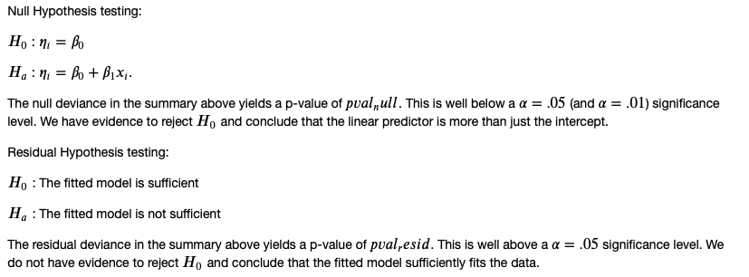

Academic Portfolio
of
Mathematics & Statistics
| Area | Description |
|---|---|
| ODEs / Linear Algebra | Undergrad level homework example of solving a system of ordinary differential equations in Latex. |
| Partial Differential Equations | Early master's level simple linear homework example in Latex. |
| Regression Analysis | Early master's level correlation homework snippets from R notebook. |
| Statistical Learning | First step of a proof comparing the MSE of an estimator with the MSE of the OLS estimator in Latex. |
| Statistical Learning | Visual in R of fitting and plotting a cubic B-spline. |
| Spatial Statistics | Master's Culminating Ex perience on tropical cyclone simulation slide presentation snippets. |
Systems of Differential Equations
Partial Differential Equations
Regression Analysis
The following snippets are from an exploration of factors related to diabetes.


Statistical Learning Proof
Statistical Learning Visual
Example of fitting and plotting a cubic B-Spline basis from a database of historical newborn name information for the state of Colorado from 1910 to 2014.